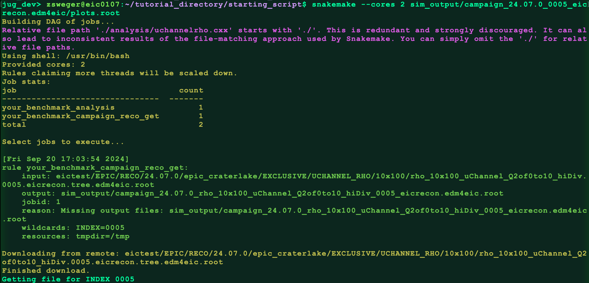
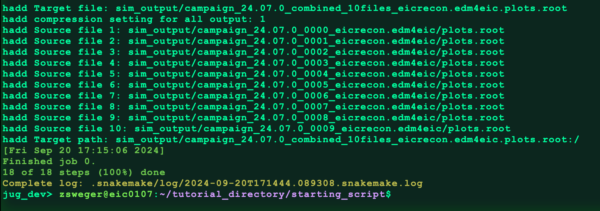
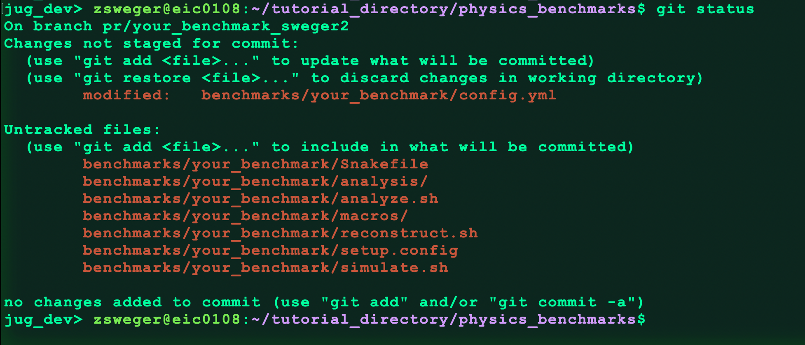
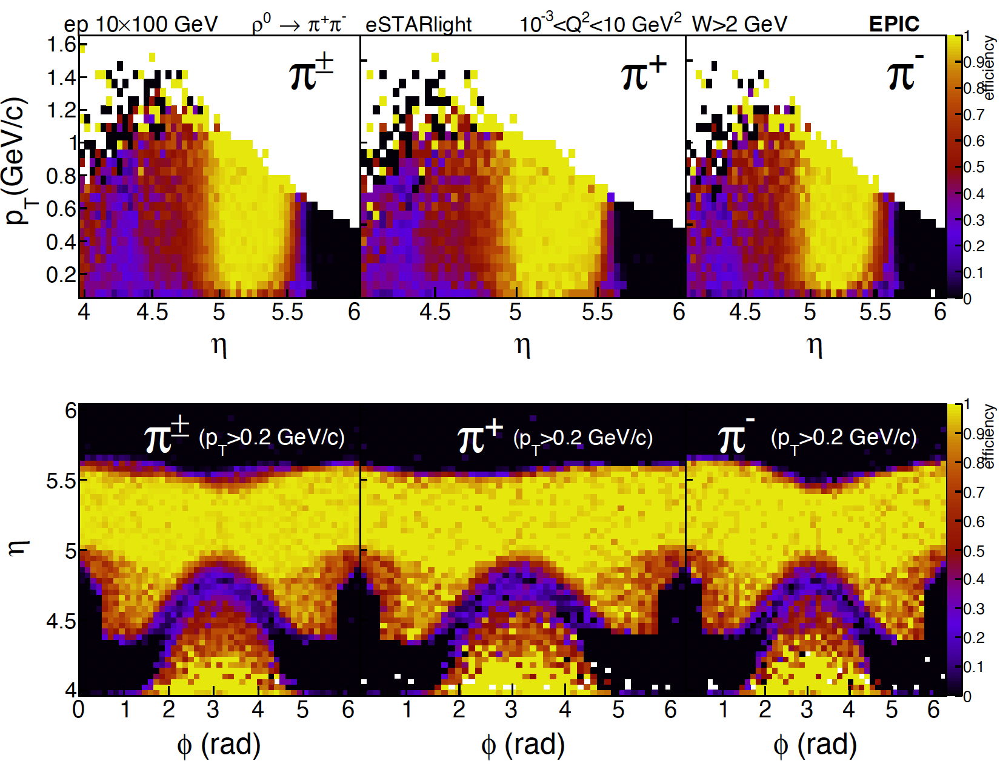
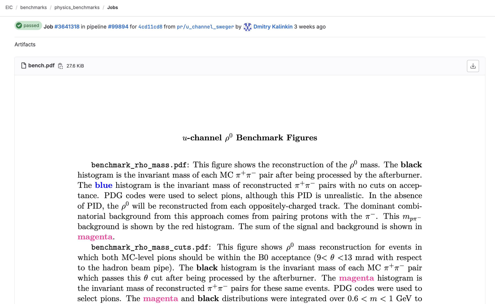
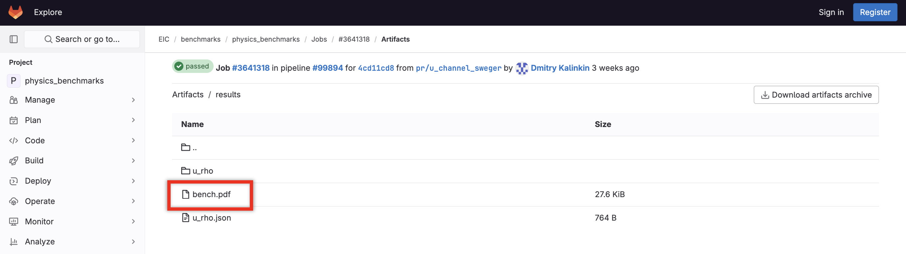

All in One View
Content from Exercise 1: Analysis Scripts and Snakemake
Last updated on 2026-07-10 | Edit this page
Estimated time: 30 minutes
Overview
Questions
- How does one set up data analysis workflows?
Objectives
- Learn basics of creating Snakemake workflows
In this exercise we start with a ready-made analysis script that we’re running locally. We’ll practice using Snakemake workflow management system to define data analysis pipelines.
Snakemake comes with a great documentation, you are encouraged to read it. For now, let’s cover its suggested use for needs of defining ePIC benchmarks.
Starting from an Analysis Script
We’re going to go all the way from an analysis script to a fully-integragrated benchmark with GitLab’s continuous integration (CI).
First launch eic-shell
then create a working directory
BASH
mkdir tutorial_directory
mkdir tutorial_directory/starting_script
cd tutorial_directory/starting_scriptCopy the following files to this working directory:
- this analysis script:
uchannelrho.cxx - this plotting macro:
plot_rho_physics_benchmark.C - this style header:
RiceStyle.h
We will also start by running over a file from the simulation campaign. Download it to your workspace:
BASH
xrdcp root://dtn-eic.jlab.org//volatile/eic/EPIC/RECO/25.10.2/epic_craterlake/EXCLUSIVE/UCHANNEL_RHO/10x100/rho_10x100_uChannel_Q2of0to10_hiDiv.0020.eicrecon.edm4eic.root ./Organize files into analysis and macros
directories:
BASH
mkdir analysis
mv uchannelrho.cxx analysis/
mkdir macros
mv plot_rho_physics_benchmark.C macros/
mv RiceStyle.h macros/Run the analysis script over the simulation campaign output:
BASH
root -l -b -q 'analysis/uchannelrho.cxx+("rho_10x100_uChannel_Q2of0to10_hiDiv.0020.eicrecon.edm4eic.root","output.root")'Now make a directory to contain the benchmark figures, and run the plotting macro:
You should see some errors like
OUTPUT
Error in <TTF::SetTextSize>: error in FT_Set_Char_Sizebut the figures should be produced just fine. If everything’s run correctly, then we have a working analysis!
With this analysis as a starting point, we’ll next explore using Snakemake to define an analysis workflow.
Getting started with Snakemake
We’ll now use a tool called Snakemake to define an analysis workflow that will come in handy when building analysis pipelines.
In order to demonstrate the advantages of using snakefiles, let’s
start using them for our analysis. First let’s use snakemake to grab
some simulation campaign files from the online storage space. In your
tutorial_directory/starting_script/ directory make a new
file called Snakefile. Open the file and add these
lines:
PYTHON
rule your_benchmark_campaign_reco_get:
output:
f"sim_output/rho_10x100_uChannel_Q2of0to10_hiDiv.{{INDEX}}.eicrecon.edm4eic.root",
shell: """
xrdcp root://dtn-eic.jlab.org//volatile/eic/EPIC/RECO/25.10.2/epic_craterlake/EXCLUSIVE/UCHANNEL_RHO/10x100/rho_10x100_uChannel_Q2of0to10_hiDiv.{wildcards.INDEX}.eicrecon.edm4eic.root {output}
"""If you’re having trouble copying and pasting, you can also copy from the ready-made Snakefile.
We also defined a new rule:
your_benchmark_campaign_reco_get. This rule defines how to
download a single file from the JLab servers to the location
sim_output.
After saving the Snakefile, let’s try running it.
The important thing to remember about Snakemake is that Snakemake
commands behave like requests. So if I want Snakemake to produce a file
called output.root, I would type
snakemake --cores 2 output.root. If there is a rule for
producing output.root, then Snakemake will find that rule
and execute it. We’ve defined a rule to produce a file called
../../sim_output/rho_10x100_uChannel_Q2of0to10_hiDiv.{INDEX}.eicrecon.edm4eic.root,
but really we can see from the construction of our rule that the
{INDEX} is a wildcard, so we should put a number there
instead. Checking out the files
on S3, we see files with indices from 0000 up to
0116. Let’s request that Snakemake download the file
rho_10x100_uChannel_Q2of0to10_hiDiv.0005.eicrecon.edm4eic.root:
Snakemake now looks for the rule it needs to produce that file. It finds the rule we wrote, and it downloads the file. Check for the file:
Okay whatever… so we download a file. It doesn’t look like Snakemake really adds anything at this point.
But the benefits from using Snakemake become more apparent as the number of tasks we want to do grows! Let’s now add a new rule below the last one:
PYTHON
rule your_benchmark_analysis:
input:
script=workflow.source_path("analysis/uchannelrho.cxx"),
data=f"sim_output/rho_10x100_uChannel_Q2of0to10_hiDiv.{{INDEX}}.eicrecon.edm4eic.root",
output:
plots=f"sim_output/campaign_25.10.2_{{INDEX}}.eicrecon.edm4eic/plots.root",
shell:
"""
mkdir -p $(dirname "{output.plots}")
root -l -b -q '{input.script}+("{input.data}","{output.plots}")'
"""This rule runs an analysis script to create ROOT files containing
plots. The rule uses the simulation campaign file downloaded from JLab
as input data, and it runs the analysis script
uchannelrho.cxx. Note that we use
workflow.source_path() to reference the script - this
function returns the correct path to the script relative to the
Snakefile’s location in the benchmark directory.
Now let’s request the output file
"sim_output/campaign_25.10.2_0005.eicrecon.edm4eic/plots.root".
When we request this, Snakemake will identify that it needs to run the
new your_benchmark_analysis rule. But in order to do this,
it now needs a file we don’t have:
sim_output/rho_10x100_uChannel_Q2of0to10_hiDiv.0005.eicrecon.edm4eic.root
because we only downloaded the file with index 0000
already. What Snakemake will do automatically is recognize that in order
to get that file, it first needs to run the
your_benchmark_campaign_reco_get rule. It will do this
first, and then circle back to the your_benchmark_analysis
rule.
Let’s try it out:
You should see something like this:

Check for the output file:You should see plots.root.
That’s still not very impressive. Snakemake gets more useful when we want to run the analysis code over a lot of files. Let’s add a rule to do this:
PYTHON
rule your_benchmark_combine:
input:
lambda wildcards: expand(
f"sim_output/campaign_25.10.2_{{INDEX:04d}}.eicrecon.edm4eic/plots.root",
INDEX=range(int(wildcards.N)),
),
wildcard_constraints:
N="\d+",
output:
f"sim_output/campaign_25.10.2_combined_{{N}}files.eicrecon.edm4eic.plots.root",
shell:
"""
hadd {output} {input}
"""On its face, this rule just adds root files using the
hadd command. But by specifying the number of files you
want to add, Snakemake will realize those files don’t exist, and will go
back to the your_benchmark_campaign_reco_get rule and the
your_benchmark_analysis rule to create them.
Let’s test it out by requesting it combine 10 files:
It will spend some time downloading files and running the analysis code. Then it should hadd the files:

Once it’s done running, check that the file was produced:
Now let’s add one more rule to create benchmark plots:
PYTHON
rule your_benchmark_plots:
input:
script=workflow.source_path("macros/plot_rho_physics_benchmark.C"),
plots=f"sim_output/campaign_25.10.2_combined_{{N}}files.eicrecon.edm4eic.plots.root",
output:
f"sim_output/campaign_25.10.2_combined_{{N}}files.eicrecon.edm4eic.plots_figures/benchmark_rho_mass.pdf",
shell:
"""
if [ ! -d "{input.plots}_figures" ]; then
mkdir "{input.plots}_figures"
echo "{input.plots}_figures directory created successfully."
else
echo "{input.plots}_figures directory already exists."
fi
root -l -b -q '{input.script}("{input.plots}")'
"""Now run the new rule by requesting a benchmark figure made from 10 simulation campaign files:
BASH
snakemake --cores 2 sim_output/campaign_25.10.2_combined_10files.eicrecon.edm4eic.plots_figures/benchmark_rho_mass.pdfNow check that the three benchmark figures were created:
You should see three pdfs. We did it!
Now that our Snakefile is totally set up, the big advantage of Snakemake is how it manages your workflow. If you edit the plotting macro and then rerun:
BASH
snakemake --cores 2 sim_output/campaign_25.10.2_combined_10files.eicrecon.edm4eic.plots_figures/benchmark_rho_mass.pdfSnakemake will recognize that simulation campaign files have already been downloaded, that the analysis scripts have already run, and the files have already been combined. It will only run the last step, the plotting macro, if that’s the only thing that needs to be re-run.
If the analysis script changes, Snakemake will only re-run the analysis script and everything after.
If we want to scale up the plots to include 15 simulation campaign files instead of just 10, then for those 5 extra files only Snakemake will rerun all the steps, and combine with the existing 10 files.
The final Snakefile should look like this:
PYTHON
rule your_benchmark_campaign_reco_get:
output:
f"sim_output/rho_10x100_uChannel_Q2of0to10_hiDiv.{{INDEX}}.eicrecon.edm4eic.root",
retries: 3
shell: """
xrdcp root://dtn-eic.jlab.org//volatile/eic/EPIC/RECO/25.10.2/epic_craterlake/EXCLUSIVE/UCHANNEL_RHO/10x100/rho_10x100_uChannel_Q2of0to10_hiDiv.{wildcards.INDEX}.eicrecon.edm4eic.root {output}
"""
rule your_benchmark_analysis:
input:
script=workflow.source_path("analysis/uchannelrho.cxx"),
data=f"sim_output/rho_10x100_uChannel_Q2of0to10_hiDiv.{{INDEX}}.eicrecon.edm4eic.root",
output:
plots=f"sim_output/campaign_25.10.2_{{INDEX}}.eicrecon.edm4eic/plots.root",
shell:
"""
mkdir -p $(dirname "{output.plots}")
root -l -b -q '{input.script}+("{input.data}","{output.plots}")'
"""
rule your_benchmark_combine:
input:
lambda wildcards: expand(
f"sim_output/campaign_25.10.2_{{INDEX:04d}}.eicrecon.edm4eic/plots.root",
INDEX=range(int(wildcards.N)),
),
wildcard_constraints:
N="\d+",
output:
f"sim_output/campaign_25.10.2_combined_{{N}}files.eicrecon.edm4eic.plots.root",
shell:
"""
hadd {output} {input}
"""
rule your_benchmark_plots:
input:
script=workflow.source_path("macros/plot_rho_physics_benchmark.C"),
plots=f"sim_output/campaign_25.10.2_combined_{{N}}files.eicrecon.edm4eic.plots.root",
output:
f"sim_output/campaign_25.10.2_combined_{{N}}files.eicrecon.edm4eic.plots_figures/benchmark_rho_mass.pdf",
shell:
"""
if [ ! -d "{input.plots}_figures" ]; then
mkdir "{input.plots}_figures"
echo "{input.plots}_figures directory created successfully."
else
echo "{input.plots}_figures directory already exists."
fi
root -l -b -q '{input.script}("{input.plots}")'
"""Conclusion
In this exercise we’ve built an analysis workflow using Snakemake. That required us to think about the flow of the data and come up with a file naming scheme to reflect it. This approach can be scaled between local testing with handful of files and largely parallel analyses on full datasets.
- Snakemake allows one to run their data analyses and share them with others
Content from Exercise 2: Setting up your first benchmark with pipelines
Last updated on 2026-07-10 | Edit this page
Estimated time: 30 minutes
Overview
Questions
- How do we create a new pipeline with GitLab CI?
Objectives
- Go through the process of contributing benchmarks on GitHub
- Learn basics of running on eicweb GitLab CI
Setting up a repository
Let’s now put our analysis workflow on GitLab’s Continuous Integration (CI) system!
Benchmarks are currently organized into two repositories:
Let’s make a physics benchmark. In the previous lesson, we were
working in the tutorial_directory/starting_script
direcotry. Let’s go back one directory to
tutorial_directory/ and start by cloning the git
repository:
(If you get an error here, you might need to set up your SSH keys.)
Please create a feature branch in your local repository:
(Replace <mylastname> with your last name or
any other nickname.)
Defining GitLab Continuous Integration jobs
Let’s see what kind of bechmarks are available:
OUTPUT
# ls benchmarks
backgrounds benchmarks.json demp diffractive_vm dis dvcs dvmp tcs u_omegaNow, create a new directory for your benchmark
The Continuous Integration system needs to know what steps it has to
execute. This is specified using YAML files. Create a file
benchmarks/your_benchmark/config.yml.
For a physics benchmark, create a config.yml with the
following contents:
YAML
your_benchmark:compile:
extends: .phy_benchmark
stage: compile
script:
- echo "You can compile your code here!"
your_benchmark:simulate:
extends: .phy_benchmark
stage: simulate
script:
- echo "I will simulate detector response here!"
your_benchmark:results:
extends: .phy_benchmark
stage: collect
needs:
- ["your_benchmark:simulate"]
script:
- echo "I will collect results here!"The basic idea here is that we are defining the rules for each step of the pipeline.
A few things to note about the config.yml:
- The rules take basic bash script as input. Anything you would write
in a bash script you can put in the script section of a rule in the
config.ymlfile. - Each rule does not need to do something. In the example
config.ymlgiven here, each rule is just printing a statement. - Each rule corresponds to a stage in GitLab’s pipelines. So the
collect rule in your
config.ymltells the pipeline what to do when it gets to the collect stage of the pipeline.
Since we’ve just created a new file, we need to let git know about it by staging it:
We also need to let the CI system know that we want it to execute
steps that we’ve just defined. For that, it has to be included from the
.gitlab-ci.yml file. Open it in your text editor of choice
and locate lines that look like:
YAML
include:
- local: 'benchmarks/diffractive_vm/config.yml'
- local: 'benchmarks/dis/config.yml'
- local: 'benchmarks/dvmp/config.yml'
- local: 'benchmarks/dvcs/config.yml'
- local: 'benchmarks/tcs/config.yml'
- local: 'benchmarks/u_omega/config.yml'
- local: 'benchmarks/backgrounds/config.yml'Insert an appropriate line for your newly created
benchmarks/your_benchmark/config.yml. We will be doing a
lot of testing using GitLab’s pipelines. We don’t need GitLab to
simulate every other benchmark while we’re still testing ours. To speed
things up, you can comment out most other benchmarks. Consider leaving a
few uncommented to make sure everything is working right:
YAML
include:
#- local: 'benchmarks/diffractive_vm/config.yml'
- local: 'benchmarks/dis/config.yml'
#- local: 'benchmarks/dvmp/config.yml'
#- local: 'benchmarks/dvcs/config.yml'
#- local: 'benchmarks/tcs/config.yml'
#- local: 'benchmarks/u_omega/config.yml'
#- local: 'benchmarks/backgrounds/config.yml'
- local: 'benchmarks/your_benchmark/config.yml'In order to make your benchmark produce artifacts, also add your benchmark to this section, and comment out any benchmarks you commented out above:
YAML
summary:
stage: finish
needs:
#- "diffractive_vm:results"
- "dis:results"
#- "dvcs:results"
#- "tcs:results"
#- "u_omega:results"
#- "backgrounds:results"
- "your_benchmark:results"Save and close the file.
The change that you’ve just made needs to be also staged. We will now learn a cool git trick. Run this:
Here -p stands for --patch. This will
display unstaged changes to the local files and let you review and
optionally stage them. There will be only one change for you to check,
so just type y and press Enter.
Submit a GitHub Pull Request
Even though our benchmark doesn’t do anything yet, let’s submit it to the CI and see it run and do nothing useful. The way to do it is to submit a pull request. We first commit the staged changes to the current branch:
And push that branch from the local repository to the shared
repository on GitHub (referenced to as origin):
(Replace <mylastname> with your last
name.)
- This should instruct you to go to
https://github.com/eic/physics_benchmarks/pull/new/pr/your_benchmark_<mylastname>to create a PR. Follow that link. -
 Provide a
title like “Adding benchmark for …”.
Provide a
title like “Adding benchmark for …”. -
 Since this work is not yet complete,
open dropdown menu of the “Create pull requst” button and select “Create
draft pull request”
Since this work is not yet complete,
open dropdown menu of the “Create pull requst” button and select “Create
draft pull request” -
 Click “Draft pull request”
Click “Draft pull request”
Your newly created Pull Request will show up.
Examine CI output on eicweb GitLab
You can now scroll to the bottom of the page and see what checks are
running. You may need to wait a bit and/or refresh the page to see a
eicweb/physics_benchmarks (epic_craterlake) check
running.

Click “Details”, it will take you to eicweb GitLab instance. The
pipeline will show all the existing jobs. The physics
benchmark pipelines and detector
benchmark pipelines are viewable on eicweb GitLab. You should be
able to see your new jobs. Each stage of the pipeline shown here
corresponds to a rule in the config.yml:

- View this example pipeline.
- All physics benchmark pipelines are here: https://eicweb.phy.anl.gov/EIC/benchmarks/physics_benchmarks/-/pipelines
- All detector benchmark pipelines are here: https://eicweb.phy.anl.gov/EIC/benchmarks/detector_benchmarks/-/pipelines
You can click on individual jobs and see output they produce during running. Our newly created jobs should produce messages in the output. Real scripts could return errors and those would appear as CI failures.

There is another important feature that jobs can produce artifacts. They can be any file. Take a look at this pipeline. Go to the “your_benchmark:results” job, click “Browse” button in the right column, then navigate to “results”, some of the plots from the benchmark are visible here.
Right now, our benchmark will not create these plots. We’ve just set it up to print statements for each job. In the next lesson, we’ll learn how to add everything we need to produce these artifacts to our pipelines!
Conclusion
We’ve practiced contributing code that runs within eicweb Continuous Integration system. Now that we have a good container for our benchmark, in the next lesson we’ll start to fill out that shell to make the benchmark actually run an analysis.
You can view these pipelines here:
- Benchmarks live in the
detector_benchmarksandphysics_benchmarksrepositories - A benchmark is added to GitLab CI by creating a
config.ymland including it from.gitlab-ci.yml - Benchmarks are submitted and tested through GitHub pull requests that trigger eicweb GitLab pipelines
Content from Exercise 3: Filling out your benchmark
Last updated on 2026-07-10 | Edit this page
Estimated time: 30 minutes
Overview
Questions
- How do we fill in each stage of the benchmark pipeline?
Objectives
- Fill out the many steps of your benchmark
- Collect templates for the benchmark stages
In this lesson we will be beefing up our benchmark by filling out several of the pipeline stages.
Setting up
Before filling out the stages for GitLab’s CI and pipelines, we want to first create a file that contains some settings used by our benchmark.
Create a new file benchmarks/your_benchmark/setup.config
with the following contents
BASH
#!/bin/bash
source strict-mode.sh
USE_SIMULATION_CAMPAIGN=true
N_EVENTS=100
FILE_BASE=sim_output/rho_10x100_uChannel_Q2of0to10_hiDiv.hepmc3.tree
INPUT_FILE=root://dtn-eic.jlab.org//volatile/eic/EPIC/EVGEN/EXCLUSIVE/UCHANNEL_RHO/10x100/rho_10x100_uChannel_Q2of0to10_hiDiv.hepmc3.tree.root
OUTPUT_FILE=${FILE_BASE}.detectorsim.root
REC_FILE_BASE=${FILE_BASE}.detectorsim.edm4eic
REC_FILE=${REC_FILE_BASE}.rootThe export ENV_MODE=eicweb lets our Snakefile know to
use the paths for running on eicweb.
Here we’ve defined a switch USE_SIMULATION_CAMPAIGN
which will allow us to alternate between using output from the
simulation campaign, and dynamically simulating new events.
When not using the simulation campaign, the N_EVENTS
variable defines how many events the benchmark should run. The rest of
these variables define file names to be used in the benchmark.
Also create a new file benchmarks/your_benchmark/simulate.sh
with the following contents:
BASH
#!/bin/bash
source strict-mode.sh
source benchmarks/your_benchmark/setup.config $*
if [ -f ${INPUT_FILE} ]; then
echo "ERROR: Input simulation file does ${INPUT_FILE} not exist."
else
echo "GOOD: Input simulation file ${INPUT_FILE} exists!"
fi
# Simulate
ddsim --runType batch \
-v WARNING \
--numberOfEvents ${N_EVENTS} \
--part.minimalKineticEnergy 100*GeV \
--filter.tracker edep0 \
--compactFile ${DETECTOR_PATH}/${DETECTOR_CONFIG}.xml \
--inputFiles ${INPUT_FILE} \
--outputFile ${OUTPUT_FILE}
if [[ "$?" -ne "0" ]] ; then
echo "ERROR running ddsim"
exit 1
fiThis script uses ddsim to simulate the detector response to your benchmark events.
Create a script named benchmarks/your_benchmark/reconstruct.sh
to manage the reconstruction:
BASH
#!/bin/bash
source strict-mode.sh
source benchmarks/your_benchmark/setup.config $*
# Reconstruct
if [ ${RECO} == "eicrecon" ] ; then
eicrecon ${OUTPUT_FILE} -Ppodio:output_file=${REC_FILE}
if [[ "$?" -ne "0" ]] ; then
echo "ERROR running eicrecon"
exit 1
fi
fi
if [[ ${RECO} == "juggler" ]] ; then
gaudirun.py options/reconstruction.py || [ $? -eq 4 ]
if [ "$?" -ne "0" ] ; then
echo "ERROR running juggler"
exit 1
fi
fi
if [ -f jana.dot ] ; then cp jana.dot ${REC_FILE_BASE}.dot ; fi
#rootls -t ${REC_FILE_BASE}.tree.edm4eic.root
rootls -t ${REC_FILE}Create a file called benchmarks/your_benchmark/analyze.sh
which will run the analysis and plotting scripts:
BASH
#!/bin/bash
source strict-mode.sh
source benchmarks/your_benchmark/setup.config $*
OUTPUT_PLOTS_DIR=sim_output/nocampaign
mkdir -p ${OUTPUT_PLOTS_DIR}
# Analyze
command time -v \
root -l -b -q "benchmarks/your_benchmark/analysis/uchannelrho.cxx(\"${REC_FILE}\",\"${OUTPUT_PLOTS_DIR}/plots.root\")"
if [[ "$?" -ne "0" ]] ; then
echo "ERROR analysis failed"
exit 1
fi
if [ ! -d "${OUTPUT_PLOTS_DIR}/plots_figures" ]; then
mkdir "${OUTPUT_PLOTS_DIR}/plots_figures"
echo "${OUTPUT_PLOTS_DIR}/plots_figures directory created successfully."
else
echo "${OUTPUT_PLOTS_DIR}/plots_figures directory already exists."
fi
root -l -b -q "benchmarks/your_benchmark/macros/plot_rho_physics_benchmark.C(\"${OUTPUT_PLOTS_DIR}/plots.root\")"
cat benchmark_output/*.jsonLet’s copy over our analysis script, our plotting macro & header, and our Snakefile:
BASH
mkdir benchmarks/your_benchmark/analysis
mkdir benchmarks/your_benchmark/macros
cp ../starting_script/Snakefile benchmarks/your_benchmark/
cp ../starting_script/analysis/uchannelrho.cxx benchmarks/your_benchmark/analysis/
cp ../starting_script/macros/RiceStyle.h benchmarks/your_benchmark/macros/
cp ../starting_script/macros/plot_rho_physics_benchmark.C benchmarks/your_benchmark/macros/Your benchmark directory should now look like this:
In order to use your Snakefile, let GitLab know it’s there. Open the
main Snakefile, NOT this one
benchmarks/your_benchmark/Snakefile, but the one at the
same level as the benchmarks directory.
Go to the very end of the file and include a path to your own Snakefile:
PYTHON
include: "benchmarks/diffractive_vm/Snakefile"
include: "benchmarks/dis/Snakefile"
include: "benchmarks/demp/Snakefile"
include: "benchmarks/your_benchmark/Snakefile"Once that’s all setup, we can move on to actually adding these to our pipeline!
The “simulate” pipeline stage
We now fill out the simulate stage in GitLab’s
pipelines. Currently the instructions for this rule should be contained
in benchmarks/your_benchmark/config.yml as:
YAML
your_benchmark:simulate:
extends: .phy_benchmark
stage: simulate
script:
- echo "I will simulate detector response here!"In order to make sure the previous stages finish before this one
starts, add a new line below stage:simulate:
needs: ["common:setup"].
This step can take a long time if you simulate too many events. So
let’s add an upper limit on the allowed run time of 10 hours: In a new
line below needs: ["common:setup"], add this:
timeout: 10 hour.
Now in the script section of the rule, add two new lines
to source the setup.config file:
Add instructions that if using the simulation campaign you can skip detector simulations. Otherwise simulate
YAML
- if [ "$USE_SIMULATION_CAMPAIGN" = true ] ; then
- echo "Using simulation campaign so skipping this step!"
- else
- echo "Grabbing raw events from XRootD and running Geant4"
- bash benchmarks/your_benchmark/simulate.sh
- echo "Geant4 simulations done! Starting eicrecon now!"
- bash benchmarks/your_benchmark/reconstruct.sh
- fi
- echo "Finished simulating detector response"Finally, add an instruction to retry the simulation if it fails:
The final simulate rule should look like this:
YAML
your_benchmark:simulate:
extends: .phy_benchmark
stage: simulate
needs: ["common:setup"]
timeout: 10 hour
script:
- echo "I will simulate detector response here!"
- config_file=benchmarks/your_benchmark/setup.config
- source $config_file
- if [ "$USE_SIMULATION_CAMPAIGN" = true ] ; then
- echo "Using simulation campaign!"
- else
- echo "Grabbing raw events from XRootD and running Geant4"
- bash benchmarks/your_benchmark/simulate.sh
- echo "Geant4 simulations done! Starting eicrecon now!"
- bash benchmarks/your_benchmark/reconstruct.sh
- fi
- echo "Finished simulating detector response"
retry:
max: 2
when:
- runner_system_failureThe “results” pipeline stage
The results stage in config.yml is right
now just this:
YAML
your_benchmark:results:
extends: .phy_benchmark
stage: collect
script:
- echo "I will collect results here!"Specify that we need to finish the simulate stage first:
Now make two directories to contain output from the benchmark
analysis and source setup.config again:
YAML
- mkdir -p results/your_benchmark
- mkdir -p benchmark_output
- config_file=benchmarks/your_benchmark/setup.config
- source $config_fileIf using the simulation campaign, we can request the rho mass
benchmark with snakemake. Once snakemake has finished creating the
benchmark figures, we copy them over to
results/your_benchmark/ in order to make them into
artifacts:
YAML
- if [ "$USE_SIMULATION_CAMPAIGN" = true ] ; then
- echo "Using simulation campaign!"
- snakemake --cores 2 ../../sim_output/campaign_25.10.2_combined_45files.eicrecon.edm4eic.plots_figures/benchmark_rho_mass.pdf
- cp ../../sim_output/campaign_25.10.2_combined_45files.eicrecon.edm4eic.plots_figures/*.pdf results/your_benchmark/If not using the simulation campaign, we can just run the
analyze.sh script and copy the results into
results/your_benchmark/ in order to make them into
artifacts:
YAML
- else
- echo "Not using simulation campaign!"
- bash benchmarks/your_benchmark/analyze.sh
- cp sim_output/nocampaign/plots_figures/*.pdf results/your_benchmark/
- fi
- echo "Finished copying!"Your final config.yml should look like:
YAML
your_benchmark:compile:
extends: .phy_benchmark
stage: compile
script:
- echo "You can compile your code here!"
your_benchmark:simulate:
extends: .phy_benchmark
stage: simulate
needs: ["common:setup"]
timeout: 10 hour
script:
- echo "Simulating everything here!"
- config_file=benchmarks/your_benchmark/setup.config
- source $config_file
- if [ "$USE_SIMULATION_CAMPAIGN" = true ] ; then
- echo "Using simulation campaign!"
- else
- echo "Grabbing raw events from XRootD and running Geant4"
- bash benchmarks/your_benchmark/simulate.sh
- echo "Geant4 simulations done! Starting eicrecon now!"
- bash benchmarks/your_benchmark/reconstruct.sh
- fi
- echo "Finished simulating detector response"
retry:
max: 2
when:
- runner_system_failure
your_benchmark:results:
extends: .phy_benchmark
stage: collect
script:
- echo "I will collect results here!"
needs:
- ["your_benchmark:simulate"]
script:
- mkdir -p results/your_benchmark
- mkdir -p benchmark_output
- config_file=benchmarks/your_benchmark/setup.config
- source $config_file
- if [ "$USE_SIMULATION_CAMPAIGN" = true ] ; then
- echo "Using simulation campaign!"
- snakemake --cores 2 ../../sim_output/campaign_25.10.2_combined_45files.eicrecon.edm4eic.plots_figures/benchmark_rho_mass.pdf
- cp ../../sim_output/campaign_25.10.2_combined_45files.eicrecon.edm4eic.plots_figures/*.pdf results/your_benchmark/
- else
- echo "Not using simulation campaign!"
- bash benchmarks/your_benchmark/analyze.sh
- cp sim_output/nocampaign/plots_figures/*.pdf results/your_benchmark/
- fi
- echo "Finished copying!"Testing Real Pipelines
We’ve set up our benchmark to do some real analysis! As a first test,
let’s make sure we’re still running only over the simulation campaign.
The USE_SIMULATION_CAMPAIGN in setup.config
should be set to true.
Now let’s add our changes and push them to GitHub!
This command should show something like this:

Now add all our changes:
BASH
git add Snakefile
git add benchmarks/your_benchmark/config.yml
git add benchmarks/your_benchmark/Snakefile
git add benchmarks/your_benchmark/analysis/uchannelrho.cxx
git add benchmarks/your_benchmark/analyze.sh
git add benchmarks/your_benchmark/macros/plot_rho_physics_benchmark.C
git add benchmarks/your_benchmark/macros/RiceStyle.h
git add benchmarks/your_benchmark/reconstruct.sh
git add benchmarks/your_benchmark/setup.config
git add benchmarks/your_benchmark/simulate.sh
git commit -m "I'm beefing up my benchmark!"
git push origin pr/your_benchmark_<mylastname>Now monitor the pipeline you created:
- Create
setup.configto switch between using the simulation campaign and re-simulating events - Each stage of the benchmark pipeline is defined in
config.yml -
config.ymltakes normal bash scripts as input - Copy resulting figures over to the
resultsdirectory to turn them into artifacts
Content from Exercise 4: Adding a Status Flag
Last updated on 2026-07-10 | Edit this page
Estimated time: 20 minutes
Overview
Questions
- How can your benchmark indicate that there were detrimental changes to software or detector design?
Objectives
- Learn what a status flag is and how to add one to your benchmark
We’ve created a benchmark and tested it with GitLab’s CI tools. Now let’s explore one of the tools available to us to alert fellow developers when there has been a detrimental change in performance for your benchmark.
What is a Status Flag?
A typical benchmark might have 5 to 20 figures which each may or may not be useful in understanding detector and algorithm performance. Developers need rapid feedback when making changes to the tracking software, changing the detector geometry and so on.
As a benchmark developer, the way you can design this into your benchmark is with a status flag. Status flags are binary pass/fail flags which are summarized at the end of a pipeline. These allow other developers to quickly identify any detrimental changes they may have made to the EIC software environment.
At the completion of one of GitLab’s pipelines, the status flags from
each benchmark are gathered and summarized like this one:

You can think about what quantities might be relevant to monitor. For example, since the u-channel rho benchmark is being used to evaluate the performance of the B0 trackers, this benchmark has a status flag assigned to the efficiency of rho reconstruction within the B0. In the April campaign, this efficiency was observed to be at roughly 95%. A flag was set such that if the efficiency dropped below 90%, it would indicate notable degredation of the performance of far-forward tracking.
Depending on your observable, you might set a status flag on:
- the mass width of a reconstructed particle
- reconstructed momentum resolution
- energy resolution in a calorimeter
Just remember that a status flag that is raised too often stops being alarming to developers. So try to leave some margin for error, and check in on the benchmark’s performance every so often.
Adding a Status Flag to Your Benchmark
To add a status flag, first define a function to set the benchmark
status. In this example, the following function was added to the
plotting macro
benchmarks/your_benchmark/macros/plot_rho_physics_benchmark.C:
CPP
///////////// Set benchmark status!
int setbenchstatus(double eff){
// create our test definition
common_bench::Test rho_reco_eff_test{
{
{"name", "rho_reconstruction_efficiency"},
{"title", "rho Reconstruction Efficiency for rho -> pi+pi- in the B0"},
{"description", "u-channel rho->pi+pi- reconstruction efficiency "},
{"quantity", "efficiency"},
{"target", "0.9"}
}
};
//this need to be consistent with the target above
double eff_target = 0.9;
if(eff<0 || eff>1){
rho_reco_eff_test.error(-1);
}else if(eff > eff_target){
rho_reco_eff_test.pass(eff);
}else{
rho_reco_eff_test.fail(eff);
}
// write out our test data
common_bench::write_test(rho_reco_eff_test, "./benchmark_output/u_rho_eff.json");
return 0;
}We also have to include the appropriate header. At the top of
plot_benchmark.C, please also add:
In the main plotting function, the reconstruction efficiency is calculated, then compared against the target:
CPP
minbineff = h_VM_mass_MC_etacut->FindBin(0.6);
maxbineff = h_VM_mass_MC_etacut->FindBin(1.0);
double reconstuctionEfficiency = (1.0*h_VM_mass_REC_etacut->Integral(minbineff,maxbineff))/(1.0*h_VM_mass_MC_etacut->Integral(minbineff,maxbineff));
//set the benchmark status:
setbenchstatus(reconstuctionEfficiency);Now every time the plotting macro is run, it will generate the
json file benchmark_output/u_rho_eff.json with
this status flag. In order propagate this flag through the pipeline, you
need also to create a top-level json file which will
collect all status flags in your benchmark.
In your benchmark directory, create a file titled
benchmark.json, or copy this
ready-made benchmark.json. The file should contain a name and title
for your benchmark, as well as a description:
JSON
{
"name": "YOUR BENCHMARK NAME",
"title": "YOUR BENCHMARK TITLE",
"description": "Benchmark for ...",
"target": "0.9"
}To keep the status flags as artifacts, also add these lines to the
end of the results rule in your config.yml
YAML
- echo "Finished, copying over json now"
- cp benchmark_output/u_rho_eff.json results/your_benchmark/
- echo "Finished copying!" The status flags from your benchmark should all collected and summarized in this stage of the pipeline too. To do this, include the following lines at the end of the stage:
Now push to GitHub!
BASH
git add benchmarks/your_benchmark/config.yml
git add benchmarks/your_benchmark/macros/plot_rho_physics_benchmark.C
git add benchmarks/your_benchmark/benchmark.json
git commit -m "added a status flag!"
git push origin pr/your_benchmark_<mylastname>Check the pipelines:
Exercise
- Try to identify several places where the status flag information is kept. It may take a while for these to run, so check this example pipeline.
The status flag information is stored in several places: the per-test
benchmark_output/u_rho_eff.json written by the plotting
macro, the top-level benchmark.json in your benchmark
directory, the copies kept as artifacts under
results/your_benchmark/, and the summary produced by
collect_tests.py at the finish stage of the
pipeline.
- Status flags are used to indicate detrimental changes to software/detector design
- Add a status flag to your benchmark to alert developers to changes in performance
Content from Exercise 5: Making Useful Figures
Last updated on 2026-07-10 | Edit this page
Estimated time: 20 minutes
Overview
Questions
- How does one make useful benchmark figures?
Objectives
- Learn what information is useful to ePIC in developing benchmark artifacts and figures
We’ve discussed how to plug your analysis script into GitLab’s CI, and monitor it using pipelines. We’ll now briefly discuss how to make figures for your benchmark that are useful to both yourself and to others.
Making benchmark figures
The plots created in a benchmark should be designed to be legible not only to yourself, but to those working on detector and software development. This means benchmark plots should be clearly labeled with
- beam settings if any (ep, eAu, … and \(5 \times 41\), \(10 \times 100\) GeV, …)
- event generator used
- kinematic cuts (\(x\), \(Q^2\), \(W\))
- EPIC label
- legible axis labels
Ideally, benchmark designers should aim to design paper-ready figures labeled with large clear text and a perceptual color palette. Remember that we want to create figures that can be used as-is in the TDR, in conference presentations, and in evaluating detector and software performance.
An example figure from the u-channel rho benchmark is shown here:

In this example, the plot is labeled with the collision system and other details:
CPP
TLatex* beamLabel = new TLatex(0.18, 0.91, "ep 10#times100 GeV");
TLatex* epicLabel = new TLatex(0.9,0.91, "#bf{EPIC}");
TLatex* kinematicsLabel = new TLatex(0.53, 0.78, "10^{-3}<Q^{2}<10 GeV^{2}, W>2 GeV");
TLatex* generatorLabel = new TLatex(0.5, 0.83, ""+vm_label+" #rightarrow "+daug_label+" eSTARlight");The axis labels and titles were scaled for clarity:
CPP
histogram->GetYaxis()->SetTitleSize(histogram->GetYaxis()->GetTitleSize()*1.5);
histogram->GetYaxis()->SetLabelSize(histogram->GetYaxis()->GetLabelSize()*1.5);The number of axis divisions was decreased to reduce visual clutter:
And margins were increased to allow for more space for larger axis labels:
Describing your benchmark figures
Even a well-labeled figure will still be ambiguous as to what is being plotted. For example, how you define efficiency may differ from another analyzer. It will be useful to include with your benchmark an explainer of each of the various plots that are produced:

This document may be written in LaTeX, exported as a PDF, and then uploaded to GitHub under your benchmark.
The way most users will interact with your benchmark is at the level of the artifacts it produces. When others are looking through the plots produced by your benchmark, this description of your figures should be readily available as an artifact itself. To achieve this, you can use this template tex document:
TEX
%====================================================================%
% BENCH.TEX %
% Written by YOUR NAME %
%====================================================================%
\documentclass{bench}
% A useful Journal macro
\def\Journal#1#2#3#4{{#1} {\bf #2}, #3 (#4)}
\NewDocumentCommand{\codeword}{v}{\texttt{\textcolor{black}{#1}}}
% Some other macros used in the sample text
\def\st{\scriptstyle}
\def\sst{\scriptscriptstyle}
\def\epp{\epsilon^{\prime}}
\def\vep{\varepsilon}
\def\vp{{\bf p}}
\def\be{\begin{equation}}
\def\ee{\end{equation}}
\def\bea{\begin{eqnarray}}
\def\eea{\end{eqnarray}}
\def\CPbar{\hbox{{\rm CP}\hskip-1.80em{/}}}
\begin{document}
\title{YOUR BENCHMARK NAME Benchmark Figures}
\maketitle
\codeword{benchmark_plot1.pdf}:
This figure shows...
\end{document}Create this bench.tex file at the top of your benchmark
(physics_benchmarks/benchmarks/your_bench/). Also copy bench.cls to the same location
to define the bench document class.
Finally, add a rule to the Snakefile to compile the tex
file, and create output in the results directory. This
ensures the resulting pdf will be included as an artifact.
rule yourbench_compile_manual:
input:
cls=workflow.source_path("bench.cls"),
tex=workflow.source_path("bench.tex"),
output:
temp("tectonic"),
cls_tmp=temp("bench.cls"),
pdf="results/bench.pdf",
shell: """
wget https://github.com/tectonic-typesetting/tectonic/releases/download/tectonic%400.15.0/tectonic-0.15.0-x86_64-unknown-linux-musl.tar.gz
tar zxf tectonic-0.15.0-x86_64-unknown-linux-musl.tar.gz
cp {input.cls} {output.cls_tmp} # copy to local directory
./tectonic {input.tex} --outdir="$(dirname {output.pdf})"
"""And make sure that the your_benchmark:results job in
your config.yml calls the snakemake compilation rule:
After pushing these changes, check GitLab’s
pipelines. View the artifacts for this push, and make sure
bench.pdf is visible in the results
directory:

Conclusion
We’ve discussed ways to make benchmark figures legible and useful to others.
Analyzers should aim to make paper-ready figures that others can use and easily understand.
Analyzers should consider including an explainer artifact which describes each figure in detail. To do this:
- Copy
bench.texandbench.clsto your benchmark:physics_benchmarks/benchmarks/your_bench/ - Edit
bench.texwith descriptions of each benchmark figure - Add a rule (shown above) to your
Snakefileto compilebench.tex - Check GitLab’s pipelines for the pdf.
- Create paper-ready benchmark figures whenever possible
- Clearly label plots with simulation details, and large axis labels and legends
- If possible, augment the benchmark with an additional explainer document which describes figures in greater detail